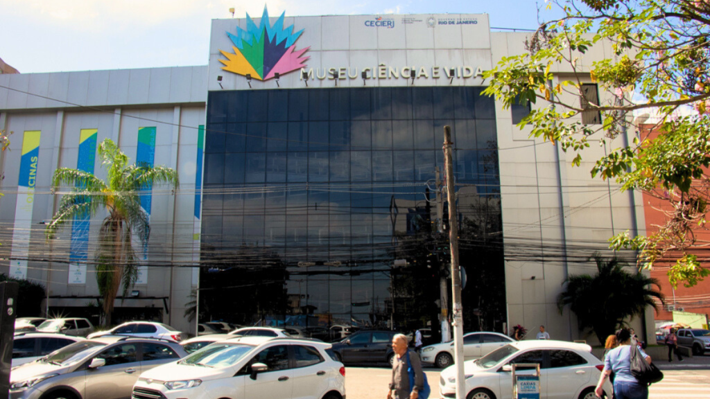

Museu Ciência e Vida:
Em atividade, desde 2010, no antigo Fórum de Duque de Caxias, o Museu Ciência e Vida tem como desafio estimular nos visitantes diferentes sensações, que os levem a novas experiências do saber, e despertar o gosto pela ciência. Por meio da interatividade, o público é instigado a buscar suas próprias descobertas científicas. O museu oferece exposições temporárias, programas de atendimento ao público escolar, oficinas para professores, atividades lúdicas educacionais (contação de histórias, artes, teatro, reciclagem e outros), exibições de filmes e documentários, além das sessões do Planetário Marcos Pontes. Batizado em homenagem ao primeiro astronauta brasileiro, o planetário possui cúpula de oito metros de diâmetro e capacidade para 52 pessoas, além de apresentar um sistema de projeção de alta tecnologia.
FUNCIONAMENTO: TER-SAB, DAS 9H ÀS 17H e Domingo e Feriados: 13h ÀS 17H
VALOR: GRATUITO
LOCALIZAÇÃO: Rua Ailton da Costa, Jardim 25 de agosto, Duque de Caxias.